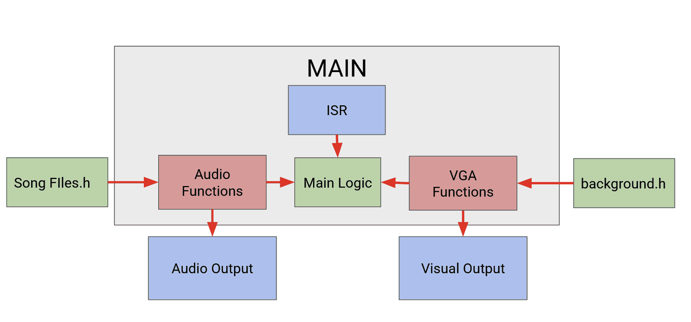
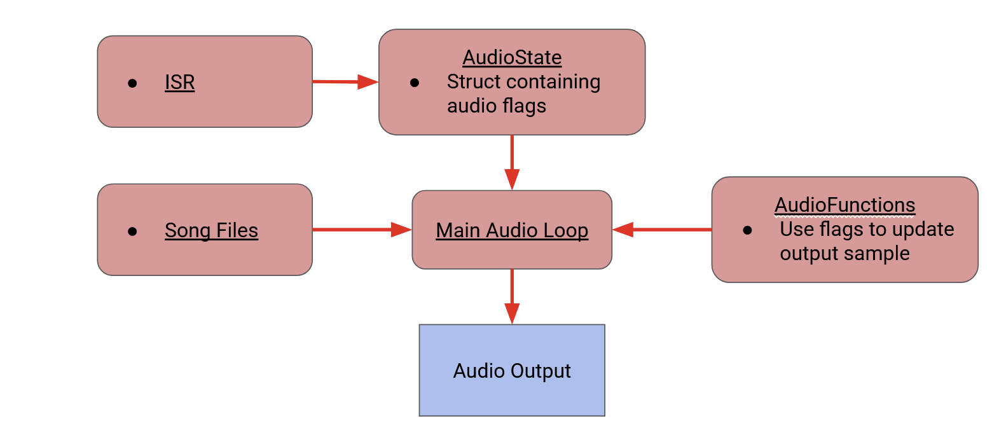
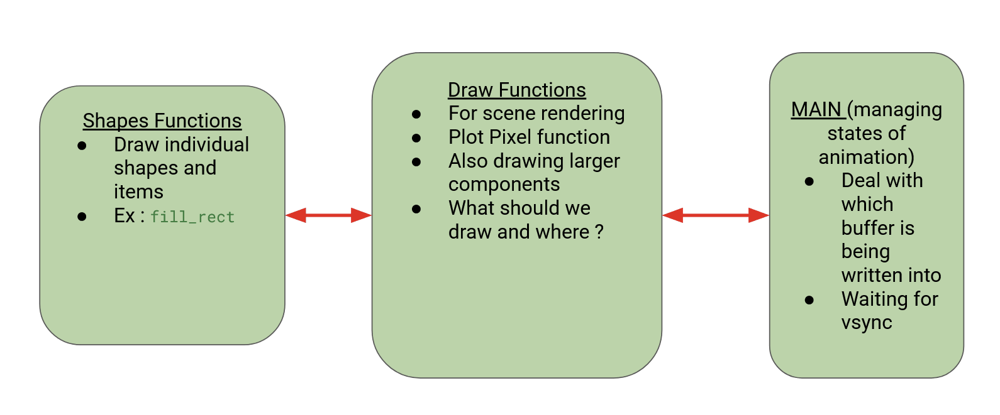

Real-time audio mixer
ECE243 Computer Organization, 2026. Built with Shay Hinkson.
C, RISC-V, interrupts, memory-mapped I/O, VGA, DE1-SoC
A DJ-style mixer for two songs, running bare-metal on the DE1-SoC's RISC-V processor. Each song is stored as separate vocal and instrumental tracks, and the board's switches and buttons mix them live: bring tracks in and out, crossfade from one song to the other, add an echo, or change the tempo. A VGA display shows which controls are on and which way a fade is going.
Controls
| Control | What it does |
|---|---|
| SW0, SW1 | Song 1 vocals, song 1 instrumental |
| SW2, SW3 | Song 2 vocals, song 2 instrumental |
| SW4 | Mute |
| SW5 | Crossfade to the other song |
| SW6 | Echo on or off |
| KEY0, KEY1 | Restart song 1, restart song 2 |
| KEY2, KEY3 | Speed up, slow down |
How it's organized
Everything runs from one main loop. The interrupts only record what the user did. A timer interrupt reads the switches and updates a shared state struct whenever one changes, and the pushbuttons raise their own interrupt through their edge-capture register. The main loop does the real work: it builds the next audio sample from that state and redraws the screen when something has changed.

The audio path
The songs are 8 kHz sample arrays compiled into the program. For each output sample, the loop adds up whichever tracks are switched on, applies the crossfade and echo, and writes the result to the audio codec's left and right FIFOs. It only writes, and only advances through the songs, when both FIFOs have space. That check is what keeps the two channels in step and stops the FIFOs from overflowing.

- Crossfade. Over 6 seconds (48,000 samples) the output slides linearly from one song to the other: the outgoing song is weighted by the time left in the fade and the incoming song by the time elapsed. Both songs keep advancing during the fade, so the incoming one is already playing when it takes over.
- Echo. A 2,400-sample ring buffer holds the last 0.3 seconds of audio. Each output sample adds two-thirds of the sample from 0.3 seconds earlier.
- Tempo. Each button press changes playback speed by 5%, between 70% and 130%. A counter adds the speed setting on every output sample and steps the song forward each time it passes 100, so faster settings skip samples and slower ones repeat them.
The display
The 320×240 screen shows a background image with indicator boxes for each switch and an arrow while a fade is running. It's double-buffered: we draw the indicators into the back buffer, ask the VGA controller to swap, and don't touch the buffers again until its status register says the swap happened at the next vertical sync. That keeps the display free of tearing without stalling the audio loop.

My part
I wrote the VGA code and the interrupt handling, worked out how to crossfade between the two songs, and wrote the main loop with Shay. Shay split the songs into vocal and instrumental tracks, converted the audio and the background image into C arrays, and wrote the tempo control.
Code
- main.c The whole program except the song and background data, which are large generated arrays.